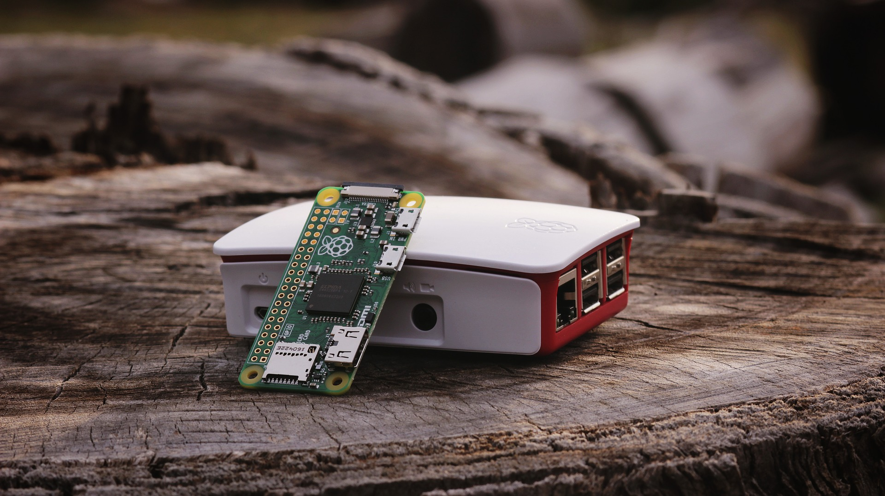

"Termillä avoin laite tarkoitetaan yleensä sitä, että laitteen valmistamiseen tarvittavat suunnitelmat (eli raaka-ainelistat, piirikaaviot ja piirilevyjen johdotuskuviot) ja sen käyttämiseen tarvittavat laiteajurit ovat vapaasti saatavilla ja muunneltavissa. Avoimia laitteita saa tuottaa ja myydä kaupallisesti, mutta niiden suunnitelmiin tehdyt muutokset tulee julkaista samanlaisilla vapailla ehdoilla kuin alkuperäiset suunnitelmat."
Wikipedia


Kesäkuussa 2014, kun Elon Musk antoi julkilausuman 'Kaikki patentimme kuuluvat sinulle'. Musk totesi, että "avoimen lähdekoodin liikkeen hengessä" Tesla ei "aloita patenttioikeuksia ketään vastaan, joka hyvässä uskossa haluaa käyttää tekniikkaamme".
Avoimia laitteita käyttäessäsi pystyt laajentamaan laitteiston käyttökohteita alkuperäisten (perus)käyttökohteiden ulkopuolelle. Voit esimerkiksi luoda korttitietokoneesta hahmontunistukseen perustuvan tunnistuslaitteen, voit käyttää sähköautojen latausteknologiaa asuntosi aurinkosähköjärjestelmässä, yms.